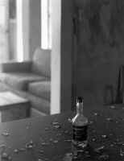

<!DOCTYPE HTML PUBLIC "-//W3C//DTD HTML 4.01 Transitional//EN"        "http://www.w3.org/TR/html4/loose.dtd">
<html lang="en">

<head>
<title>Phillip Martin:&nbsp; Before Bobby Shane Grew a Mustache and Became Evil 
- Henderson State University </title>
<meta http-equiv="Content-Language" content="en-us">
<meta http-equiv="Content-Type" content="text/html; charset=windows-1252">
<meta name="GENERATOR" content="Microsoft FrontPage 5.0">
<meta name="ProgId" content="FrontPage.Editor.Document">
<meta name="copyright" content="Copyright © 2002 Henderson State University">
<meta name="rating" content="General">
</head>

<body background="ARlogoborder.jpg" link="#006600" vlink="#006600" alink="#006600" bgcolor="#FFFFFF">

<div align="right">
  <table border="0" width="85%">
    <tr>
      <td width="100%" align="left">
        <blockquote>
          <p class="MsoNormal" style="mso-outline-level:1;mso-layout-grid-align:none;
text-autospace:none"><b><span style="font-size:18.0pt;mso-bidi-font-size:12.0pt"><font color="#006600" face="Arial">Phillip
          Martin<o:p>
          </o:p>
          </font>
          </span></b></p>
        </blockquote>
        <p class="MsoNormal" style="mso-outline-level:1;mso-layout-grid-align:none;
text-autospace:none"><b><span style="font-size:14.0pt;mso-bidi-font-size:12.0pt">Before
        Bobby Shane Grew a Mustache and Became Evil<o:p>
        </o:p>
        </span></b></p>
        <p class="MsoNormal" style="mso-layout-grid-align:none;text-autospace:none"><b><font size="7"><a href="images/blackL2.jpg">
        </a></font><font color="#006600" size="5">U</font></b><span style="font-size:12.0pt">ntil he hurt himself, my father was an infielder. Not anyone
        whose name you would recognize, unless you really know your baseball. An
        infielder for Cleveland, back in the Sixties, back when they were a bad
        team. He hurt himself and he was done; a rag-armed burnout, a bit player
        who lost whatever especial gift made him valuable. I saw it<span style="mso-spacerun: yes">
        </span>happen. I think.<o:p>
        </o:p>
        </span></p>
        <p class="MsoNormal" style="mso-layout-grid-align:none;text-autospace:none"><span style="font-size:12.0pt">I say &quot;I think&quot; because I don't know whether the
        episode I am remembering happened the way I remember it happening. If
        you ask my mother or my sister about it, they mightn't remember the
        incident at all. They might have another version, another story. You
        can't ask my father because he's dead</span><span style="mso-char-type: symbol; mso-symbol-font-family: Symbol; font-size: 12.0pt; font-family: Symbol; mso-ascii-font-family: Times New Roman; mso-hansi-font-family: Times New Roman">-</span><span style="font-size:12.0pt">when
        I was 16 he went up to the cabin he kept on the lake and he shot
        himself. Maybe it was an accident—I wasn't there, I don't know. Anyway
        that's for sure another story. <o:p>
        </o:p>
        </span></p>
        <p class="MsoNormal" style="mso-layout-grid-align:none;text-autospace:none"><span style="font-size:12.0pt">I suspect that you can always tell when you're misremembering
        something. You know you are misremembering when you flatter yourself,
        when you remember being stoic or unflustered or serene. But most of all
        you know you are misremembering, when you remember too clearly, when
        things aren't jumbled up and inextricable and everything makes sense.
        That's the way this memory is, that's the way most memories are.
        Memory—at least my memory—is notoriously unreliable. I can still see
        the red orange tip of one of my uncles' cigarettes, still smell the
        sweet sick tang of my grandmother's dipping snuff.<span style="mso-spacerun: yes">
        </span>I remember it too clearly for it to have happened exactly as I
        believe it happened. I think that what I remember is not actually what
        occurred, but something more like a quasi-memory. Parts of it are true,
        parts confabulated.<span style="mso-spacerun: yes"> </span>I don't
        know which is which. My amnesiac mind fills in the details.<o:p>
        </o:p>
        </span></p>
        <p class="MsoNormal" style="mso-layout-grid-align:none;text-autospace:none"><span style="font-size:12.0pt">It was around Thanksgiving. It was the last time we would make
        the long drive from the Midwest down to Georgia, to visit my mother's
        family in the red clay country outside of Savannah. My mother's
        tobacco-planter father was already dead from lung cancer, but the big
        house was still intact, though it was crowded with my mother's grown
        brothers—Kent and Ray and Trip—and beginning to fall into disrepair.<o:p>
        </o:p>
        </span></p>
        <p class="MsoNormal" style="mso-layout-grid-align:none;text-autospace:none"><span style="font-size:12.0pt">I was uncomfortable around the uncles, who were all beery breath
        and stubble to me. They laughed because I was afraid of the chickens in
        the dirt yard, and of the sows that lolled in their muddy pens and
        crushed cobs in their mouths.<span style="mso-spacerun: yes"> </span>To
        some extent, I was afraid of my grandmother—she seemed not to realize
        that the boys she raised were no 'counts without any talent for
        agriculture or keeping books. All they could do with money was spend it;
        &quot;lay up drunk in a Savannah hotel room for a week,&quot; I once
        heard my mother spit. Whatever promise any of them might have once had
        was dwindling by the time I was old enough to understand anything at all
        about the way people lived; even though I was a child of ten, it all
        seemed unbearably tawdry and shameful to me. For as long as I could
        remember, I had only pretended to want to go to Grandma's house because
        it was expected, because it was what little boys did, because it would
        have hurt my mother if she'd known how I really felt. <o:p>
        </o:p>
        </span></p>
        <p class="MsoNormal" style="mso-layout-grid-align:none;text-autospace:none"><span style="font-size:12.0pt">My sister—younger than I was and less the snob—may have
        actually liked it; she liked the horses and the cows and the sweet
        fragrance of tobacco curing in the barns. <o:p>
        </o:p>
        </span></p>
        <p class="MsoNormal" style="mso-layout-grid-align:none;text-autospace:none"><span style="font-size:12.0pt">(I liked that smell too, but I hated the barns themselves; they
        were dark and cool and tall with doors so low that even at ten I had to
        stoop to enter.<span style="mso-spacerun: yes"> </span>Someone<span style="mso-spacerun: yes">
        </span>told me once that snakes can get in there and twine around the
        sticks to which the bundles of leaves were tied and once when I was
        eight or so, Ray- who was my uncle but only nine years older and still
        in high school so I never called him &quot;Uncle&quot;—once locked me
        in one of the barns until I screamed. When he let me out I tried to
        fight him, but his browned arms were too long and powerful for me to
        push past. He laughed but my fury scared him, he spent the rest of our
        visit trying to make friends with me, offering to let me drive the old
        blue Ford tractor or to take me for a ride on the back of his red and
        chrome Honda motorcycle. He offered to let me shoot BB guns and even the
        little .22 rifle he kept in the trunk of his big Chevrolet.<o:p>
        </o:p>
        </span></p>
        <p class="MsoNormal" style="mso-layout-grid-align:none;text-autospace:none"><span style="font-size:12.0pt">Finally, he showed me how to mine the soft sandy roads that ran
        past the big house and beyond, by cupping out a basin in the khaki earth
        and making a cross of scrapwood. He would set one end of the lever down
        into the dirt and let the other protrude slightly. Then he would load
        the hole with pebbles and dash a slim layer of sand across the lowered
        rocks, and hide in the bushes until the unfortunate car—or more often
        pickup—would roll across the exposed lever, spring the trap and send a
        fusillade rattling upside its passenger door.)<span style="mso-spacerun: yes">
        </span>My sister loved my rough and erratic uncles unconditionally, in
        the completely natural way children have of loving members of their
        family—the way children are supposed to love their kin. She thought
        they were funny when they were drunk and bounced her on their knees and
        flipped her off their shoulders; I now think that I—the little prick
        professor—always thought they were doomed and scary.<o:p>
        </o:p>
        </span></p>
        <p class="MsoNormal" style="mso-layout-grid-align:none;text-autospace:none"><span style="font-size:12.0pt">It is difficult for me to remember how I was then—I suppose I
        was a prissy, spoiled suburban kid used to chlorinated swimming pool
        water and Little League baseball with grandstands and flannel uniforms.
        I was used to my father being a kind of hero to my friends, to being
        singled out by teachers and coaches. <o:p>
        </o:p>
        </span></p>
        <p class="MsoNormal" style="mso-layout-grid-align:none;text-autospace:none"><span style="font-size:12.0pt">I suppose that I was exceedingly quiet, probably more than a bit
        pretentious for my age. I know that I was careful, that I read a
        lot—John R. Tunis's baseball books and Robert Louis Stevenson and
        Boy's Life and Joe Falls, Furman Bisher, and Leonard Koppett in The
        Sporting News. I know that I chose my words carefully and that I
        preferred listening and watching to performing. Even at ten, I was the
        most embarrassable person on the planet.<o:p>
        </o:p>
        </span></p>
        <p class="MsoNormal" style="mso-layout-grid-align:none;text-autospace:none"><span style="font-size:12.0pt">I always took books to Grandma's house—I'd lie out on the front
        porch of that melting wedding cake of a house, propped up on my elbows
        with my hands clapped over my ears. I couldn't hear anything that way.
        I'd disappear into one of Tunis's stories about kid baseball—the one
        about the kid who was a very good shortstop despite being very small,
        who told his friends that when he needed to be bigger than he was to
        make a play he'd just &quot;think&quot; himself bigger.<o:p>
        </o:p>
        </span></p>
        <p class="MsoNormal" style="mso-layout-grid-align:none;text-autospace:none"><span style="font-size:12.0pt">And he'd leap and snag the line drive to save the game.<o:p>
        </o:p>
        </span></p>
        <p class="MsoNormal" style="mso-layout-grid-align:none;text-autospace:none"><span style="font-size:12.0pt">I had my own gift as a child. If I stayed still and did not look
        anyone in the face, I could disappear. <o:p>
        </o:p>
        </span></p>
        <p class="MsoNormal" style="mso-layout-grid-align:none;text-autospace:none"><span style="font-size:12.0pt">I had disappeared that night. I should have been in bed, it was
        that late, but I was reading. Not on the porch this time, but stretched
        out on the floor by the sofa in the room my Grandmother kept her
        television in. I was there to see it all, although I shouldn't have
        been.<o:p>
        </o:p>
        </span></p>
        <p class="MsoNormal" style="mso-layout-grid-align:none;text-autospace:none"><span style="font-size:12.0pt">Ray was sitting on the sofa with Kent, a soft-faced,
        yellow-haired cracker of about twenty-five. They were watching
        wrestling. Trip—the oldest boy, he was probably forty or so—was
        across the room in a recliner. My father and mother and grandmother were
        in another part of the house, discussing something, maybe money. I
        remember I didn't want to overhear that conversation; I knew that my
        father was &quot;not rich&quot; but that he &quot;made a good
        living&quot; and that every couple of years we moved into a better house
        in a better neighborhood. I had a vague idea that my grandmother was
        having some kind of difficulty, that there were things for them to
        discuss. <o:p>
        </o:p>
        </span></p>
        <p class="MsoNormal" style="mso-layout-grid-align:none;text-autospace:none"><span style="font-size:12.0pt">I should say that if there was tension between my father and my
        mother's family I never saw it. My father tolerated these men-children,
        these unhygienic drunks. Sometimes he seemed amused by them, but he
        didn't think himself any better,<span style="mso-spacerun: yes"> </span>he
        didn't condescend to them they way I imagine I must have. He would go
        fishing with them in the Black River, and work with them on their sorry,
        rust-spackled cars. I sensed that they looked up to him; none of them
        were especially good athletes but they had all played football in school
        and Trip had even walked on at the University of Georgia and started a
        couple of games at tight-end his senior year. At the very least, they
        liked hanging around my father; they enjoyed being seen with him in
        Savannah.<o:p>
        </o:p>
        </span></p>
        <p class="MsoNormal" style="mso-layout-grid-align:none;text-autospace:none"><span style="font-size:12.0pt">And, though I didn't realize it then, the younger boys—Ray and
        Kent—were imminently draftable. Within a year, both would be gone
        overseas. Kent came home when he cut his big toe off with a shovel. It
        was said to be an accident. Ray didn't come home. <o:p>
        </o:p>
        </span></p>
        <p class="MsoNormal" style="mso-layout-grid-align:none;text-autospace:none"><span style="font-size:12.0pt">I remember it this way: Ray and Kent were trading swallows from
        an amber bottle and feeding a mild, blue-hearted fire crackling in the
        fireplace of the tawny pine-paneled den. Professional wrestling blaring
        on the new Slyvania color television set—it wasn't a week old, my
        father had bought it in Savannah a couple of days before—a lithe blond
        man called Bobby Shane was being strangled by a huge black man whose
        face was painted like a Zulu's and who wore a leopard-skin toga,
        Flintstone-style. A necklace made of (no doubt plastic) animal teeth
        circled his thick, wadded, soot-black neck. (I remember he had a bone in
        his nose but at this distance that doesn't seem terribly likely.)<o:p>
        </o:p>
        </span></p>
        <p class="MsoNormal" style="mso-layout-grid-align:none;text-autospace:none"><span style="font-size:12.0pt">I don't know how I know but I know that Kent loved Bobby Shane.
        He was his favorite wrestler. Ray, who seemed to understand that the
        match was fixed, began to bait Kent—who was damn near feeble-minded
        and stupid drunk besides.<span style="mso-tab-count:1">
        </span>&quot;Looks like Bobby Shane is done for, Kent; that nigger gonna
        pop his head like a pimple.&quot;<o:p>
        </o:p>
        </span></p>
        <p class="MsoNormal" style="mso-layout-grid-align:none;text-autospace:none"><span style="font-size:12.0pt">&quot;No man, Bobby Shane gonna come back and whip his black ass.
        Watch and see.&quot;<o:p>
        </o:p>
        </span></p>
        <p class="MsoNormal" style="mso-layout-grid-align:none;text-autospace:none"><span style="font-size:12.0pt">&quot;Not this time, Kent. Bobby Shane done fucked up and pissed
        the nigger off.&quot;<o:p>
        </o:p>
        </span></p>
        <p class="MsoNormal" style="mso-outline-level:1;mso-layout-grid-align:none;
text-autospace:none"><span style="font-size:12.0pt">&quot;Fuck
        you, Ray; just watch the damn match.&quot;<o:p>
        </o:p>
        </span></p>
        <p class="MsoNormal" style="mso-layout-grid-align:none;text-autospace:none"><span style="font-size:12.0pt">Bobby Shane pulled himself up on the ropes and kicked the black
        wrestler square in the chest with both boots. The black man stumbled and
        stomped around the ring for a moment, then clamped his hands tight
        around Bobby Shane's neck.<o:p>
        </o:p>
        </span></p>
        <p class="MsoNormal" style="mso-layout-grid-align:none;text-autospace:none"><span style="font-size:12.0pt">&quot;You just love Bobby Shane, don't you. Kent?&quot;<o:p>
        </o:p>
        </span></p>
        <p class="MsoNormal" style="mso-layout-grid-align:none;text-autospace:none"><span style="font-size:12.0pt">&quot;I ain't no goddamn queer.&quot;<o:p>
        </o:p>
        </span></p>
        <p class="MsoNormal" style="mso-layout-grid-align:none;text-autospace:none"><span style="font-size:12.0pt">&quot;I ain't saying your a queer, Kent, I'm saying you got a
        thing for that<o:p>
        </o:p>
        </span></p>
        <p class="MsoNormal" style="mso-layout-grid-align:none;text-autospace:none"><span style="font-size:12.0pt">little
        blond boy.&quot;<o:p>
        </o:p>
        </span></p>
        <p class="MsoNormal" style="mso-layout-grid-align:none;text-autospace:none"><span style="font-size:12.0pt">&quot;I ain't no goddamn queer.&quot;<o:p>
        </o:p>
        </span></p>
        <p class="MsoNormal" style="mso-layout-grid-align:none;text-autospace:none"><span style="font-size:12.0pt">&quot;You're the one talking about queers, Kent. I'm just having
        a sociable drink here and watching the show. Just being peaceable. Looks
        like Bobby Shane gonna get his ass whupped good.&quot;<o:p>
        </o:p>
        </span></p>
        <p class="MsoNormal" style="mso-layout-grid-align:none;text-autospace:none"><span style="font-size:12.0pt">Wanzuzi—that was the black wrestler's name, I suddenly
        remember—still had Bobby Shane by the throat. Now the white boy seemed
        to go limp, and the Zulu chief—or whatever—military pressed the pale
        body above his head and began to spin. Ray took a long pull off the
        amber bottle and hooted.<o:p>
        </o:p>
        </span></p>
        <p class="MsoNormal" style="mso-layout-grid-align:none;text-autospace:none"><span style="font-size:12.0pt">&quot;Lookit, Kent, he's going piledrive your lover boy!&quot;<o:p>
        </o:p>
        </span></p>
        <p class="MsoNormal" style="mso-layout-grid-align:none;text-autospace:none"><span style="font-size:12.0pt">Kent paused and licked his lips before answering.<o:p>
        </o:p>
        </span></p>
        <p class="MsoNormal" style="mso-layout-grid-align:none;text-autospace:none"><span style="font-size:12.0pt">&quot;He ain't my lover boy; maybe he's your lover boy.&quot;<o:p>
        </o:p>
        </span></p>
        <p class="MsoNormal" style="mso-layout-grid-align:none;text-autospace:none"><span style="font-size:12.0pt">Ray leaned back—when I remember him, I remember him looking a
        bit like the actor Brad Pitt, with butter bland features and a shock of
        hair the color of muddy water. His next question seemed almost
        thoughtful, it was posed softly, like Dick Cavett interrogating John
        Lennon. For a second I thought Ray really wanted to known the answer.<o:p>
        </o:p>
        </span></p>
        <p class="MsoNormal" style="mso-layout-grid-align:none;text-autospace:none"><span style="font-size:12.0pt">&quot;Kent, are you a goddamn queer?&quot;<o:p>
        </o:p>
        </span></p>
        <p class="MsoNormal" style="mso-layout-grid-align:none;text-autospace:none"><span style="font-size:12.0pt">The screen was now a blizzard of waving limbs. Men in tuxedos
        with metal chairs, women in swimsuits (swimsuits!?) with their hands
        clapped to their mouths. A buzzing cacophony.<o:p>
        </o:p>
        </span></p>
        <p class="MsoNormal" style="mso-layout-grid-align:none;text-autospace:none"><span style="font-size:12.0pt">&quot;I ain't no gwaddem queer.&quot;<o:p>
        </o:p>
        </span></p>
        <p class="MsoNormal" style="mso-layout-grid-align:none;text-autospace:none"><span style="font-size:12.0pt">Kent's ears flushed. Wanzuzi emerged from the thicket of
        humanity, carrying<o:p>
        Bobby
        Shane's limp body across his shoulders. He bent his great Negro head and<o:p>
        with
        a sudden surge of effort he rolled Bobby Shane off his back and over the<o:p>
        top
        rope, spilling him on the concrete floor.<o:p>
        </o:p>
        </span></p>
        <o:p>
        <o:p><o:p>
        <p class="MsoNormal" style="mso-layout-grid-align:none;text-autospace:none"><span style="font-size:12.0pt">The body bounced. Kent looked stricken. Ray whooped.<o:p>
        </o:p>
        </span></p>
        <p class="MsoNormal" style="mso-layout-grid-align:none;text-autospace:none"><span style="font-size:12.0pt">&quot;Maybe the nigger killed him, Kent.&quot;<o:p>
        </o:p>
        </span></p>
        <p class="MsoNormal" style="mso-layout-grid-align:none;text-autospace:none"><span style="font-size:12.0pt">Now Ray was cracking open his Zippo to light the cigarette that
        had appeared<o:p>
        in
        his mouth. He was getting mean-drunk. He sneered at his older brother, a<o:p>
        feral
        show of tobacco-yellowed teeth.<o:p>
        </o:p>
        </span></p>
        <o:p>
        <o:p>
        <p class="MsoNormal" style="mso-layout-grid-align:none;text-autospace:none"><span style="font-size:12.0pt">Kent looked at him with something like shameful hate.<o:p>
        </o:p>
        </span></p>
        <p class="MsoNormal" style="mso-layout-grid-align:none;text-autospace:none"><span style="font-size:12.0pt">&quot;Fuck you, Ray. Suck my dick.&quot;<o:p>
        </o:p>
        </span></p>
        <p class="MsoNormal" style="mso-layout-grid-align:none;text-autospace:none"><span style="font-size:12.0pt">&quot;Thought you said you weren't no queer, Kent.&quot;<o:p>
        </o:p>
        </span></p>
        <p class="MsoNormal" style="mso-layout-grid-align:none;text-autospace:none"><span style="font-size:12.0pt">&quot;Fuck you, Ray, shut up.&quot;<o:p>
        </o:p>
        </span></p>
        <p class="MsoNormal" style="mso-layout-grid-align:none;text-autospace:none"><span style="font-size:12.0pt">Kent stared at the sizzling screen as Bobby Shane somehow willed
        himself to<o:p>
        his
        feet and wobbled for a second before crawling heroically under the
        bottom<o:p>
        rope.
        He staggered into the center of the ring as Wanzuzi prepared to jump<o:p>
        from
        the turnbuckle onto his back.<o:p>
        </o:p>
        </span></p>
        <o:p>
        <o:p><o:p>
        <p class="MsoNormal" style="mso-layout-grid-align:none;text-autospace:none"><span style="font-size:12.0pt">&quot;You're so fuckin' ignorant, Kent; you think this shit is
        real.&quot;<o:p>
        </o:p>
        </span></p>
        <p class="MsoNormal" style="mso-layout-grid-align:none;text-autospace:none"><span style="font-size:12.0pt">&quot;I ain't ignorant! Suck my dick, Ray!&quot;<o:p>
        </o:p>
        </span></p>
        <p class="MsoNormal" style="mso-layout-grid-align:none;text-autospace:none"><span style="font-size:12.0pt">Kent was shouting. Trip started to get up, then slid back down.<o:p>
        </o:p>
        </span></p>
        <p class="MsoNormal" style="mso-layout-grid-align:none;text-autospace:none"><span style="font-size:12.0pt">Kent, while he truly did love Bobby Shane—in fact ached blue
        for him—had no confidence in his ability as a wrestler. The nigger was
        damn big and sneaky besides. Kent cursed the colored atoms bouncing off
        the inside of the screen. <o:p>
        </o:p>
        </span></p>
        <p class="MsoNormal" style="mso-layout-grid-align:none;text-autospace:none"><span style="font-size:12.0pt">My mistake was looking up. I broke the spell. I was suddenly
        visible.<o:p>
        </o:p>
        </span></p>
        <p class="MsoNormal" style="mso-layout-grid-align:none;text-autospace:none"><span style="font-size:12.0pt">Ray spoke first.<o:p>
        </o:p>
        </span></p>
        <p class="MsoNormal" style="mso-layout-grid-align:none;text-autospace:none"><span style="font-size:12.0pt">&quot;Hey, Billy, come sit over here by your Uncle Ray. Come
        watch this, Bobby Shane getting beat by a fat nigger from Africa.&quot;<o:p>
        </o:p>
        </span></p>
        <p class="MsoNormal" style="mso-layout-grid-align:none;text-autospace:none"><span style="font-size:12.0pt">I was too polite to refuse. I obediently moved to the very place
        I didn't want to be. I nestled in on the greenish-orange velour sofa
        between my smelly relatives. I spoke, softly.<o:p>
        </o:p>
        </span></p>
        <p class="MsoNormal" style="mso-layout-grid-align:none;text-autospace:none"><span style="font-size:12.0pt">&quot;You're supposed to say `colored man' or `Negro.' That other
        word is ugly.&quot; It hurts me to remember how earnest I was.<o:p>
        </o:p>
        </span></p>
        <p class="MsoNormal" style="mso-layout-grid-align:none;text-autospace:none"><span style="font-size:12.0pt">Now Bobby Shane broke the Zulu's hold, spun around and drove a
        forearm into the big man's chest. Kent whooped again and I could smell
        his naked underarms, nastily exposed above the his sleeveless ribbed
        undershirt. The fire raged on, red and gold and unnecessary.<o:p>
        </o:p>
        </span></p>
        <p class="MsoNormal" style="mso-layout-grid-align:none;text-autospace:none"><span style="font-size:12.0pt">I kept watching the fire. I could feel Trip watching me. I did
        not look at either Ray or Kent. One of them—probably Ray—grabbed me
        under my arms and lifted me up then swung me down on the hooked rug. He
        started to demonstrate a wrestling hold. I tried not to cry.<o:p>
        </o:p>
        </span></p>
        <p class="MsoNormal" style="mso-layout-grid-align:none;text-autospace:none"><span style="font-size:12.0pt">Now Kent's hard hands slapped my smooth boy's belly. &quot;Indian
        burn! Indian burn!&quot; The friction hurt. I was full of hot child
        fury, leaking tears of unspecific abashment. It was all I could do not
        to call out. Ray—I'm sure it was Ray—lifted me again, dropped me
        back on the sofa face first.<o:p>
        </o:p>
        </span></p>
        <p class="MsoNormal" style="mso-layout-grid-align:none;text-autospace:none"><span style="font-size:12.0pt">&quot;Bobby Shane! Bobby Shane!&quot; Kent again, rubbing my
        forearms, reddening my skin. My breath rushed out, I gulped air that
        reeked of lighter fluid mixed with sweat and strong alcohol. All was
        warm. My crying came in jerky gasps. <o:p>
        </o:p>
        </span></p>
        <p class="MsoNormal" style="mso-layout-grid-align:none;text-autospace:none"><span style="font-size:12.0pt">My father was there, sudden, silent, and calm. In one motion he
        pulled Ray up and struck him full and awful in the mouth. Blood squirted
        out like the juice from a grapefruit. It flecked my face. It was warm
        and tasted electric—like when I'd put my tongue across both poles of a
        transistor radio battery. I watched it all.<o:p>
        </o:p>
        </span></p>
        <p class="MsoNormal" style="mso-layout-grid-align:none;text-autospace:none"><span style="font-size:12.0pt">Ray staggered back a step then came at my father awkwardly,
        bringing his fist from behind his head—a crying schoolboy's punch. My
        father blocked it with his left forearm and threw two brief piston-like
        punches into Ray's soft gut, lifting him up and then sending him sagging
        to the floor. His head hit the sharp edge of the coffee table. Webs of
        black blood. Kent came screaming, with the Southern Comfort bottle in
        his hand—I can remember the brand now. My father sidestepped him and
        cracked him on the back of the neck with his elbow. The drunken retard
        went down whimpering like a puppy.<o:p>
        </o:p>
        </span></p>
        <p class="MsoNormal" style="mso-layout-grid-align:none;text-autospace:none"><span style="font-size:12.0pt">Trip looked at the mess from across the room and sighed. On the
        television, the referee raised Bobby Shane's arm in victory.<o:p>
        </o:p>
        </span></p>
        <p class="MsoNormal" style="mso-layout-grid-align:none;text-autospace:none"><span style="font-size:12.0pt">My father seemed unexcited, but an artery bulged in his neck. His
        eyes were cold and gray as he checked me out. His voice was soft.<o:p>
        </o:p>
        </span></p>
        <p class="MsoNormal" style="mso-layout-grid-align:none;text-autospace:none"><span style="font-size:12.0pt">&quot;You all right, son?&quot;<o:p>
        </o:p>
        </span></p>
        <p class="MsoNormal" style="mso-layout-grid-align:none;text-autospace:none"><span style="font-size:12.0pt">I nodded, ashamed of myself and instantly afraid for my father.
        There were shotguns and rifles and long knives in my grandmother's
        house. I felt that my father had made bad enemies. <o:p>
        </o:p>
        </span></p>
        <p class="MsoNormal" style="mso-layout-grid-align:none;text-autospace:none"><span style="font-size:12.0pt">My father genuflected—an altar boy at the rail—beside the
        busted-up Ray, who was sobbing, his brown gobby spittle mixing with
        blood. He spoke quietly, precisely. He clipped off each sentence. He was
        breathing deeply but easily. Of all that happened that night, I am most
        confident in my memory of his exact words to Ray.<o:p>
        </o:p>
        </span></p>
        <p class="MsoNormal" style="mso-layout-grid-align:none;text-autospace:none"><span style="font-size:12.0pt">&quot;If you ever touch my boy again I will kill you. With my
        bare hands. You will die. It will not be pleasant. I'm telling you this
        because I want you to know that I am serious. I am not angry with you, I
        know you don't think you were doing anything wrong. That's why I'm
        warning you. I will kill you.&quot;<o:p>
        </o:p>
        </span></p>
        <p class="MsoNormal" style="mso-layout-grid-align:none;text-autospace:none"><span style="font-size:12.0pt">Ray gurgled, wordlessly, his will to fight dissolved. Kent wept
        like a little girl.<o:p>
        </o:p>
        </span></p>
        <p class="MsoNormal" style="mso-layout-grid-align:none;text-autospace:none"><span style="font-size:12.0pt">My father picked me up and held me. <o:p>
        </o:p>
        </span></p>
        <p class="MsoNormal" style="mso-outline-level:1;mso-layout-grid-align:none;
text-autospace:none"><span style="font-size:12.0pt">&quot;It
        was my fault -&quot;<o:p>
        </o:p>
        </span></p>
        <p class="MsoNormal" style="mso-layout-grid-align:none;text-autospace:none"><span style="font-size:12.0pt">&quot;Hush, it wasn't your fault. We're going away from
        here.&quot;<o:p>
        </o:p>
        </span></p>
        <p class="MsoNormal" style="mso-layout-grid-align:none;text-autospace:none"><span style="font-size:12.0pt">I nodded. Radiant with shame. I clung like a monkey. <o:p>
        </o:p>
        </span></p>
        <p class="MsoNormal" style="mso-layout-grid-align:none;text-autospace:none"><span style="font-size:12.0pt">Somehow we all got in the car. My mother had my sister by the
        hand. My father carried me. Someone asked my grandmother to come with
        us, but she wouldn't. I now imagine she and Trip ended up driving her
        other boys to the emergency room that night.<o:p>
        </o:p>
        </span></p>
        <p class="MsoNormal" style="mso-layout-grid-align:none;text-autospace:none"><span style="font-size:12.0pt">My mother, looking
        like Mary Tyler Moore, wordless took the wheel and drove us all deep
        into the dark, mosquito-thick Georgia night. Into Savannah. We stopped
        at a Travelodge, beneath the orange sign with the sleepy bear in a
        nightcap. <o:p>
        </o:p>
        </span></p>
        <p class="MsoNormal" style="mso-layout-grid-align:none;text-autospace:none"><span style="font-size:12.0pt">My mother checked us in, my father sat with us in the car,
        clutching his right arm. Years later he told me the doctors told him his
        biceps had pulled off the bone and snapped up like a window shade. He
        could never completely straighten his elbow again.<o:p>
        </o:p>
        </span></p>
        <p class="MsoNormal" style="mso-layout-grid-align:none;text-autospace:none"><span style="font-size:12.0pt">We got up early the next day and drove straight through to home,
        stopping only once, at a Krispy Kreme donut shop somewhere in Alabama
        with the &quot;Hot&quot; sign flashing. I ate two glazed, and a
        custard-filled Long John. My father drank coffee and stared hard out the
        window.<o:p>
        </o:p>
        </span></p>
        <p class="MsoNormal" style="mso-layout-grid-align:none;text-autospace:none"><span style="font-size:12.0pt">I heard the train; I watched my father watch it as it clattered
        past; orange and bone and rust, one boxcar after another, for minutes
        that seemed like hours, until, without warning, without even the red
        spectacle of a caboose, it was gone. <o:p>
        </o:p>
        </span></p>
        <p class="MsoNormal"><o:p>
        &nbsp;
        </p>
        <p class="MsoNormal" align="right"><font size="2">(Photo by Leslie
        Black)</font></o:p>
        </p>
        </td>
    </tr>
  </table>
</div>

<p align="center"><a title="Select to go to the Home Page" href="2000.html">HOME</a></p>

</body>

</html>